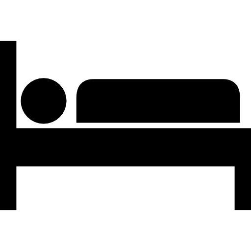
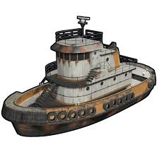

Si lo tienes eres dios, si no eres manco, es la capacidad de apuntado con un arma de un jugador.
Acción de persona noob, se trata en conseguir scarp y componentes a base de romper los barriles que te vayas encontrando por las carreteras del mapa
Descúbrelo en el juego, costumbres rusas de darte la bienvenida al servidor realizando un agujero en tu base para que todo el mundo vea lo bonita que te está quedando la decoración interior.
Compañía desadrrolladora del juego
(retraso en inglés): Es el término utilizado cuando tu conexión a internet es débil y tienes un retraso con respecto a los acontecimientos que sucenden en el proio servidor
O los amas o los odias. Tiene dos requisitos básciso, tener una edad MENTAL menor a 16-17 años y tener una voz que te chirríe cuando la escuches. Pueden ser muy molestos por norma general, pero si tienes la experiencia suficiente puedes encerrarlos en una carcel durante un wipe entero y pasarte de vez en cuando a reirte de él.
Dícese de la persona que acaba de empezar a jugar (tú), aunque en un juego como el rust, vas a ser noob aún teniendo 2000 hora en el juego
Jugando a este juego, nunca vas a tener problema con la definición, es como cuando un profesor te dice en clase: "Os lo digo pero no entra en el examen". Es el beneficio obatenido en un raideo, algo que en rust nunca se da porque raidees lo que raidees la lógica del juego hará que ninguna base tenga el loot que necesitas en ese momento.
Dícese de las personas que habitan en Rusia, habitualmente jugadores tryhards de rust que tienen como único fin en la vida intentar que te desinstales el videojuego y te unas a la guerra como aliado de ucrania. Nota: Solo hablan ruso
Se da en gran parte de los juegos que tengan un personaje jugable. Spawnear hace referencia a la aparición de alguna persona o ítem en el mapa, siendo indiferente el momento en el que se realiza y por norma general teniendo un uso ilimitado
Son barcos remolcadores que spawnean en los dos puertos del mapa. Están bastante cotizados porque puedes vivir en ellos y solo aparecen tres en todo el mundo, además, si los aparcas en zona segura, no te lo podrán robar
Reinicio total del servidor, puede darse a nivel interno en los servidores de la comunidad (semanal, quincenal), o el primer jueves de cada mes en los servidores oficiales